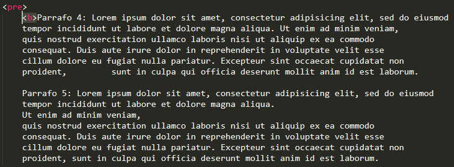

Podemos utilizar estas etiquetas para modificar la forma en que se muestra el texto al usuario. |
|---|
|  |
Como por ejemplo ponemos en negritas todo el texto para identificar que el texto debe ser representado de la topografia que se esté utilizando. |
|---|